SECCIÓN
MANTENIMIENTO Y REPARACIÓN
servicio con vehículo en marcha
PROCEDIMIENTOS DE SERVICIO GENERALES DEL SISTEMA A/C
Procedimientos de servicio generales
- Procedimientos de descarga, adición de aceite, evacuación y carga para el sistema de aire acondicionado
- Manipulación de las tuberías y racores del refrigerante
- Manipulación del refrigerante.
- Mantenimiento de la estabilidad química en el sistema de refrigeración.
- Sustitución de juntas tóricas.
COMPONENTES DE SERVICIO
Componentes HVAC comunes
Aquellos componentes utilizados en sistemas no automáticos están contemplados en otras secciones del presente manual.
- Motor del ventilador.
- Mangueras del calefactor.
-
- Consulte la Sección 7B, Sistema de aire acondicionado, ventilación y calefacción de control manual para los procedimientos siguientes:
- Transductor de presión del A/A.
- Manguito del compresor al condensador
- Compresor.
- Condensador.
- Tubo del evaporador al compresor.
- Tubo del evaporador al receptor-secador.
- Receptor-secador.
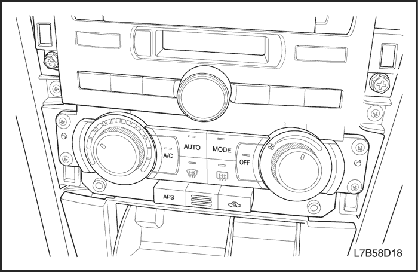


Conjunto de control de temperatura automático
(Indicado para conducción a izquierdas, conducción a derechas similar)
Procedimiento de desmontaje
- Desconecte el cable negativo de la batería.
- Desmonte el panel decorativo del autorradio. Consulte la Sección 9F, Equipo de sonido.
- Quite los tornillos de fijación del conjunto de control.
- Tire hacia fuera de la unidad para ganar acceso a la parte posterior.
- Desenchufe los conectores eléctricos.
- Desmonte el conjunto del control de temperatura automático.
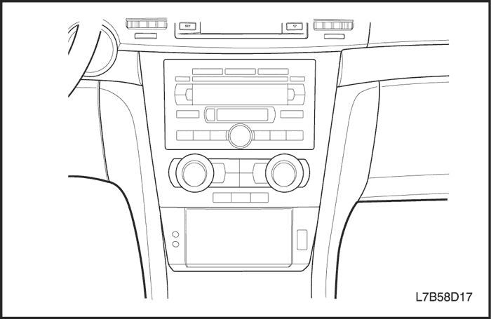
procedimiento de montaje
- Enchufe los conectores eléctricos.
- Coloque el conjunto del control de temperatura automático y ponga los tornillos de fijación.
Apretar
Apriete los tornillos de fijación del conjunto de control hasta 2,5 N•m (22 lb-pulg.).
- Monte el panel decorativo del autorradio. Consulte la Sección 9F, Equipo de sonido.
- Conecte el cable negativo de la batería.
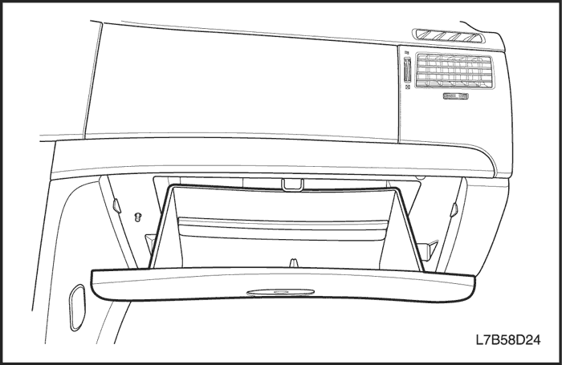
Motor de compuerta de aire de admisión
Procedimiento de desmontaje
- Desconecte el cable negativo de la batería.
- Desmonte la guantera. Consulte la Sección 9E, Instrumentación/información para el conductor.
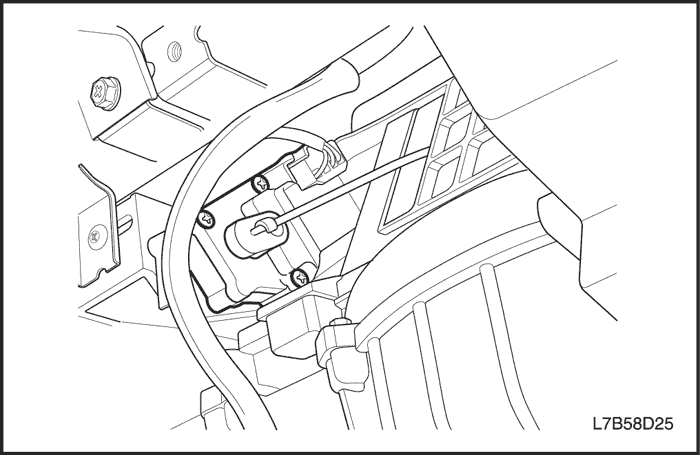
- Desmonte la varilla de accionamiento sacando la varilla de la palanca con unos alicates de punta fina.
- Desmonte la palanca de accionamiento.
- Desenchufe el conector eléctrico.
- Quite los tornillos de fijación del motor.
- Desmonte el motor.
procedimiento de montaje
- Monte el motor.
- Coloque y apriete los tornillos de fijación del motor.
- Monte la palanca de accionamiento.
- Monte la varilla de accionamiento.
- Enchufe el conector eléctrico.
- Monte la guantera. Consulte la Sección 9E, Instrumentación/información para el conductor.
- Conecte el cable negativo de la batería.
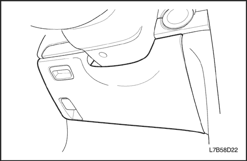
Modo motor de puerta
Procedimiento de desmontaje
- Desconecte el cable negativo de la batería.
- Retire la tapa inferior del panel de instrumentos. Consulte la Sección 9E, Instrumentación/información para el conductor.
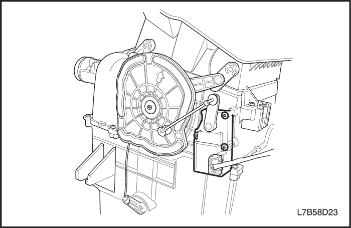
- Desenchufe el conector eléctrico.
- Desmonte la varilla de accionamiento del motor sacando la varilla de la palanca con unos alicates de punta fina.
- Desmonte la palanca del motor.
- Quite los tornillos de fijación del motor.
- Desmonte el motor de la compuerta de modo.
procedimiento de montaje
- Monte el motor de la compuerta de modo.
- Coloque y apriete los tornillos de fijación del motor.
- Monte la palanca del motor apretándola en su eje.
- Monte la varilla de accionamiento.
- Enchufe el conector eléctrico.
- Monte la tapa inferior del panel de instrumentos. Consulte la Sección 9E, Instrumentación/información para el conductor.
- Conecte el cable negativo de la batería.
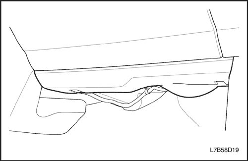
Motor de la compuerta de temperatura
Procedimiento de desmontaje
- Desconecte el cable negativo de la batería.
- Desmonte la tapa del panel inferior de la guantera. Consulte la Sección 9E, Instrumentación/información para el conductor.
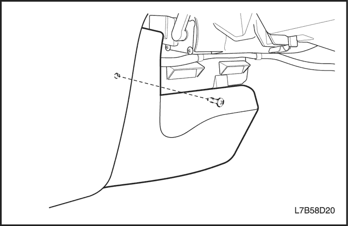
- Desmonte la extensión delantera de la consola. Consulte la Sección 9E, Instrumentación/información para el conductor.
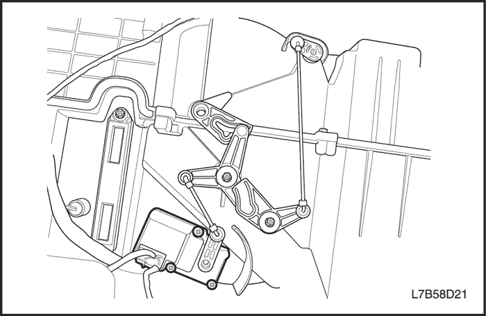
- Desenchufe el conector eléctrico.
- Desmonte la varilla de accionamiento sacándola de la palanca con unos alicates de punta fina.
- Desmonte la palanca del motor de su eje tirando de ella hacia fuera.
- Quite los tornillos de fijación del motor.
- Desmonte el motor de la compuerta de temperatura.
procedimiento de montaje
- Monte el motor de la compuerta de temperatura.
- Coloque y apriete los tornillos de fijación.
- Apriete la palanca en el eje motor.
- Monte la varilla de accionamiento en la palanca.
- Enchufe el conector eléctrico.
- Monte la extensión delantera de la consola. Consulte la Sección 9E, Instrumentación/información para el conductor.
- Monte la tapa del panel inferior de la guantera. Consulte la Sección 9E, Instrumentación/información para el conductor.
- Conecte el cable negativo de la batería.
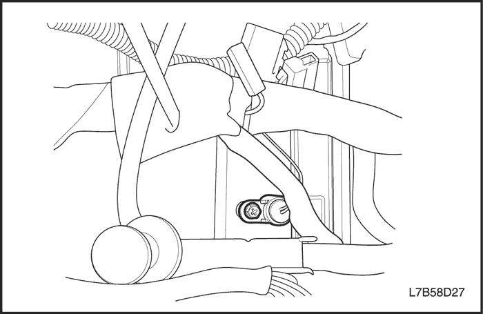
Sensor del conducto
Procedimiento de desmontaje
- Desconecte el cable negativo de la batería.
- Desmonte el equipo de sonido. Consulte la Sección 9F, Equipo de sonido.
- Desenchufe el conector eléctrico.
- Extraiga el tornillo y desmonte el sensor del conducto.
procedimiento de montaje
- Monte el sensor de temperatura del refrigerante en el módulo del aire acondicionado y gire el sensor para que quede encajado.
- Enchufe el conector eléctrico.
- Monte el equipo de sonido. Consulte la Sección 9F, Equipo de sonido.
- Conecte el cable negativo de la batería.
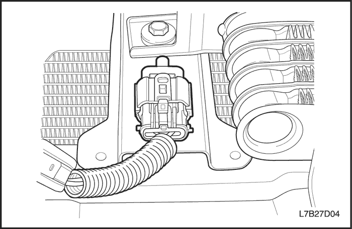
Sensor de temperatura de aire ambiente
Procedimiento de desmontaje
- Desconecte el cable negativo de la batería.
- Desenchufe el conector eléctrico del sensor de temperatura de aire ambiente.
- Quite la tuerca de fijación del soporte.
- Desmonte el sensor de temperatura de aire ambiente.
procedimiento de montaje
- Coloque el sensor de temperatura de aire ambiente en su soporte.
- Coloque la tuerca de fijación en el soporte.
Apretar
Apriete la tuerca del soporte de fijación del sensor de temperatura de aire ambiente hasta 6 N•m (53 lb-pulg.).
- Enchufe el conector eléctrico.
- Conecte el cable negativo de la batería.
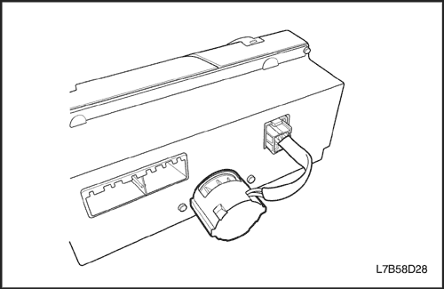
Sensor de temperatura del interior del vehículo
Procedimiento de desmontaje
- Desconecte el cable negativo de la batería.
- Desmonte el conjunto del control de temperatura automático (ATC). Consulte el apartado "Conjunto del ATC" de esta sección.
- Quite los tornillos que sujetan el sensor de temperatura dentro del coche.
procedimiento de montaje
- Monte el sensor dentro del coche.
- Coloque y apriete los tornillos de fijación del sensor dentro del coche.
- Monte el conjunto del ATC. Consulte el apartado "Conjunto del ATC" de esta sección.
- Conecte el cable negativo de la batería.
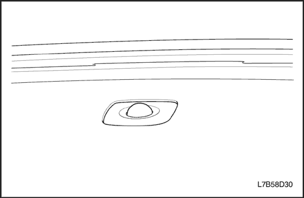
Sensor solar
Procedimiento de desmontaje
- Desconecte el cable negativo de la batería.
- Haga palanca ligeramente para levantar y desmontar el sensor solar.
- Sujete el conector eléctrico para evitar que se caiga debajo del salpicadero.
- Desenchufe el conector eléctrico.
procedimiento de montaje
- Enchufe el conector eléctrico.
- Meta y apriete el sensor solar en su posición del salpicadero.
- Conecte el cable negativo de la batería.
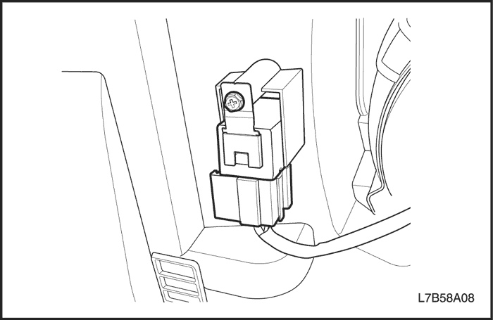
Relé del ventilador alto
Procedimiento de desmontaje
- Desconecte el cable negativo de la batería.
- El relé está situado delante del motor del ventilador.
- Desmonte la tapa del panel inferior de la guantera. Consulte la Sección 9E, Instrumentación/información para el conductor.
- Separe el relé del conector.
- Quite los tornillos y desmonte el relé de velocidad alta del ventilador.
procedimiento de montaje
- Coloque los tornillos y monte el relé de velocidad alta del ventilador.
- Enchufe el conector eléctrico.
- Monte la tapa del panel inferior de la guantera. Consulte la Sección 9E, Instrumentación/información para el conductor.
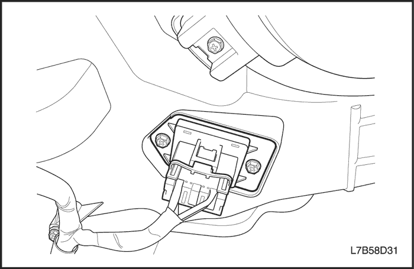
Módulo del transistor de potencia
Procedimiento de desmontaje
- Desconecte el cable negativo de la batería.
- Desmonte la tapa del panel inferior de la guantera. Consulte la Sección 9E, Instrumentación/información para el conductor.
- Desenchufe el conector eléctrico en la resistencia.
- Quite los tornillos de la resistencia.
- Retire la resistencia del módulo del A/A tirando ligeramente de la resistencia hacia abajo.
procedimiento de montaje
- Monte la resistencia nueva en el conjunto de la caja del distribuidor de aire/calefactor con sus tornillos.
Apretar
Apriete los tornillos de fijación de la resistencia del motor del ventilador hasta 6 N•m (53 lb-pulg.).
- Enchufe el conector eléctrico en la resistencia.
- Conecte el cable negativo de la batería.
- Confirme el correcto funcionamiento del ventilador.
- Monte la tapa del panel inferior de la guantera. Consulte la Sección 9E, Instrumentación/información para el conductor.
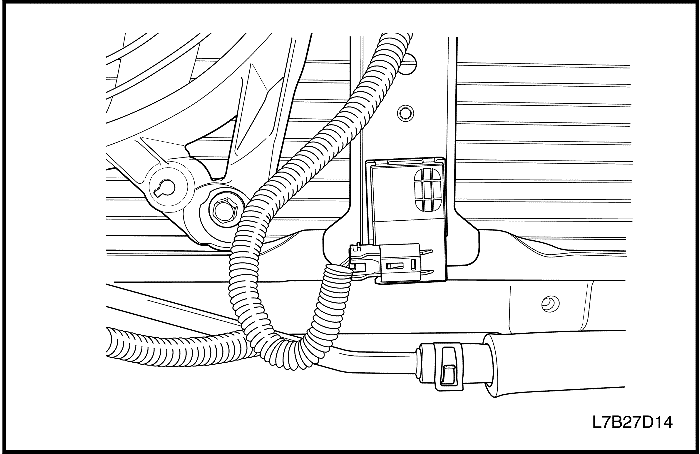
Sistema antipolución
Procedimiento de desmontaje
- Desconecte el cable negativo de la batería.
- Desenchufe el conector eléctrico.
- Haga palanca y desmonte el sistema antipolución (APS).
procedimiento de montaje
- Monte el APS.
- Enchufe el conector eléctrico en el APS.
- Conecte el cable negativo de la batería.
REPARACIÓN DE LA UNIDAD
INSPECCIÓN DEL COMPRESOR DE AIRE ACONDICIONADO V5
Inspección del compresor
- Bobina del embrague.
- Conjunto del cubo y plato del embrague.
- Rotor del embrague y cojinete.
- Compresor V5, localización de componentes.
- Conjunto de la válvula de control.
- Junta tórica entre el cilindro y el cabezal delantero.
- Prueba de fugas (externas).
- Válvula de descarga de presión.
- Cabezal trasero, junta, plato de válvulas, plato de válvulas de aspiración y junta tórica.
- Cambio del retén de eje.
DESCRIPCIÓN GENERAL Y FUNCIONAMIENTO DEL SISTEMA
INFORMACIÓN GENERAL
El sistema V5
- Componentes del sistema - funcionales.
- El sistema de aire acondicionado V5.
- Compresor V5 - descripción de funcionamiento.
- Compresor V5 - Descripción general
Componentes del sistema - controles
Controlador
El funcionamiento del sistema de A/A se controla mediante los interruptores situados en el cabezal de control. Este sistema de calefacción y ventilación montado sobre la consola incluye los siguientes elementos:
Pulsadores del control de temperatura
- Suba la temperatura del aire que entra en el vehículo pulsando el interruptor superior con la flecha roja orientada hacia arriba.
- Baje la temperatura pulsando el interruptor del botón con la flecha azul orientada hacia abajo.
- Accione la compuerta de mezcla de aire mediante el motor eléctrico.
- Varíe la mezcla de aire que pasa a través del núcleo del calefactor con el aire que no pasa por dicho núcleo.
Cada vez que se pulsa el interruptor, la temperatura cambia en incrementos de 0,5°C (1°F). Todo ello aparece en la ventana de la temperatura en el indicador de funciones.
El indicador de funciones
Se trata de una pantalla de cristal líquido (LCD) que indica el estado de los ajustes de control seleccionados. Comenzando por la izquierda de la pantalla, las secciones son las siguientes:
- Ajuste de la temperatura: indica la temperatura seleccionada con el mando de control de la temperatura.
- Estado automático: indica si el sistema está funcionando en modo completamente automático o en modo manual.
- Icono del antivaho: indica la selección manual del modo de desescarchado total.
- Modo: representado por un icono, muestra el modo elegido por el sistema en modo automático (o por el conductor en modo manual) con una flecha luminosa que indica la trayectoria del aire.
- A/A: un icono en forma de copo de nieve indica si el A/A está encendido o apagado.
- Velocidad del ventilador: indica la velocidad iluminando una barra basada en segmentos, añadiendo segmentos en orden ascendente según aumenta la velocidad del ventilador hasta llegar a la velocidad máxima.
Ocho pulsadores adicionales
- Desescarchado total: hace que los motores de modo dirijan todo el aire hacia las salidas del parabrisas y de las ventanillas auxiliares para conseguir la máxima acción antivaho.
- Admisión de aire: para seleccionar admisión de aire fresco, que es la opción predeterminada, o recirculación del aire. Las flechas del flujo del aire de la pantalla indican el modo en vigor.
- Interruptor de automático total: mantiene automáticamente la temperatura ajustada. En este modo, el sistema de control de la temperatura del habitáculo totalmente automático (FATC) controla los siguientes elementos:
- Motor de la compuerta de la mezcla de aires.
- Motor de la compuerta de modo.
- Velocidad del motor del ventilador.
- El motor de la compuerta de admisión de aire.
- A/A conectado/desconectado.
- Interruptor OFF: desconecta el aire acondicionado automático y el control del ventilador.
- Interruptor de modo: permite la selección manual del sentido del flujo del aire.
- La selección se indica en la pantalla de funciones.
- Cada vez que se pulsa el interruptor de modo, se revisualiza en la pantalla la función siguiente.
- Interruptor del A/A: permite la selección y el control manual de las funciones del aire acondicionado.
- Interruptor de mando del ventilador: permite la selección manual entre cinco velocidades del ventilador.
- Interruptor del antivaho: enciende el calefactor eléctrico del antivaho de la luneta trasera y los espejos retrovisores exteriores, si el vehículo dispone de retrovisores con calefacción.
Transductor de presión
La conmutación del transductor de presión incorpora las funciones de los interruptores de desconexión de alta y de baja presión junto con el interruptor de funcionamiento cíclico del ventilador. El transductor de presión se encuentra situado en la tubería del lado de alta presión del líquido refrigerante detrás del montante derecho, entre el dicho montante y el tabique cortafuegos. La salida de este transductor de presión llega hasta el módulo de control electrónico del motor (ECM), que controla el funcionamiento del compresor en función de la señal de presión.
Parada del compresor con el acelerador totalmente abierto (WOT)
Durante la aceleración con el pedal del acelerador pisado a fondo, el sensor de posición del acelerador (TPS) envía una señal al ECM que, a su vez, controla el embrague del compresor.
Corte en caso de RPM elevadas
A medida que la velocidad del motor aumenta y las rpm se acercan a su límite máximo, el ECM liberará el embrague del compresor hasta que el motor reduzca su velocidad y las rpm sean más bajas.